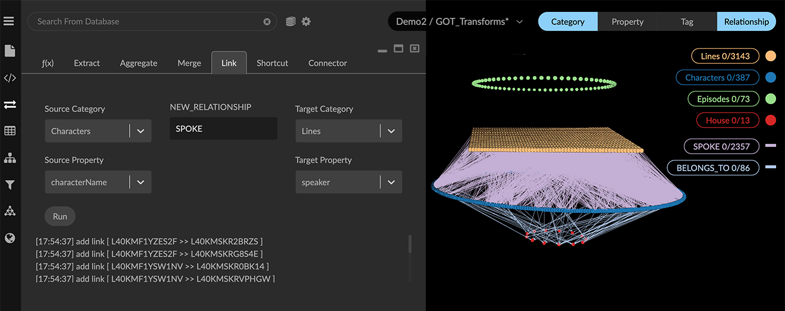

Combining data with Link The Link transform connects nodes with equivalent property values through edges of a new or existing relationship. Properties can be linked even if the property names differ, which is especially useful for combining data from different sources. Link can also be used to explicitly draw a connection among nodes within a data set. Examples use the open-source dataset for the HBO Game of Thrones series. For a hands-on exercise see our How to GraphXR tutorials. The Game of Thrones Characters.csv file includes the characterName property, while the Lines.csv file includes the speaker property. Although named differently, the two properties have matching values: the name of the character in the show. We can use those properties to create a relationship between lines of dialog and the character that spoke it. If a property is missing, or the values do not match, a link will not be created. This can result in nodes remaining unconnected. To correct this, you can select and inspect the unconnected nodes and if appropriate, edit the property values. To Link nodes by property value: To operate on the entire data set, deselect all the data. In the Transform panel, open the Link tab. In this example, we’ll link characters to the lines they spoke. Select or enter the following details: Source Category: select Characters Create Relationship: enter SPOKE Target Category: select Lines Source Property: select characterName Target Property: select speaker Click Run. Error and completion messages appear below the Run button. The new SPOKE relationship appears in the legend, and Character nodes now have new directional SPOKE edges connected to the respective Lines nodes.  For easier visualization, the data for each category are arranged using Geometric layouts.